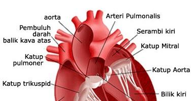
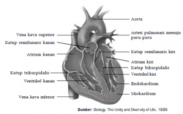

Waspada dan Kenali Lebih Jauh Ciri-Ciri Sakit Jantung - Alodokter
2021.06.08 01:06

Kesehatan
Waspada dan Kenali Lebih Jauh Ciri-Ciri Sakit Jantung
Ciri-ciri sakit jantung penting untuk Anda ketahui. Pasalnya, penyakit ini dapat menyerang siapa saja tanpa mengenal usia dan bahkan ada yang tidak menimbulkan gejala. Dengen mengenal ciri-cirinya, langkah penanganan dapat segera dilakukan sebelum menimbulkan komplikasi yang fatal.
Penyakit jantung adalah kondisi ketika jantung mengalami gangguan dan tidak berfungsi dengan baik. Gangguan tersebut bisa bermacam-macam dan ditangani dengan cara yang berbeda pula.
Sakit jantung umumnya ditandai dengan nyeri dada dan sesak napas saat beraktivitas maupun beristirahat. Namun, ada beberapa jenis penyakit jantung yang gejalanya hampir serupa dengan penyakit lain atau bahkan tidak bergejala.
Oleh karena itu, penting bagi Anda untuk mengenal ciri-ciri sakit jantung agar pemeriksaan dan langkah penanganan dapat segera dilakukan.
Ciri-ciri Sakit Jantung Berdasarkan Jenisnya
Berikut ini adalah beberapa jenis penyakit jantung beserta tanda dan gejala yang menyertainya:
1. Serangan jantung
Serangan jantung terjadi ketika aliran darah ke otot jantung terhambat akibat adanya plak atau penyumbatan di pembuluh darah jantung. Kondisi ini berdampak pada terganggunya fungsi jantung dalam mengalirkan darah ke seluruh tubuh.
Seseorang yang mengalami serangan jantung akan menunjukkan beberapa gejala, seperti:
Nyeri di bagian dada, tulang rusuk bagian bawah, dan lengan yang menjalar hingga ke leher, rahang, bahu, sampai punggung Pusing, mual, dan muntah Nyeri di perut bagian atas atau ulu hati Lemas Keringat berlebih Sesak napas Detak jantung lebih cepat atau berdebar Perut kembungGejala tersebut dapat berlangsung selama 30 menit atau lebih dan tidak hilang meski sudah minum obat pereda nyeri biasa. Gejala yang muncul pun bisa bersifat ringan hingga berat.
Untuk beberapa kasus, serangan jantung terkadang tidak menunjukkan gejala sama sekali. Kondisi ini disebut dengan silent myocardial infaction .
2. Penyakit jantung koroner
Penyakit jantung koroner terjadi ketika pembuluh darah yang memasok darah ke jantung terhambat akibat penumpukan plak atau aterosklerosis .
Penyakit jantung koroner umumnya ditandai oleh rasa tidak nyaman, nyeri, atau rasa tertekan di bagian dada. Selain itu, penyakit jantung koroner juga dapat menimbulkan beberapa gejala lain, seperti:
Lemas dan pusing Jantung berdebar atau palpitasi Keringat dingin Mual Napas pendek atau sesak napas3. Aritmia
Aritmia terjadi ketika jantung berdetak secara tidak beraturan akibat adanya gangguan aliran listrik di saraf yang mengatur irama jantung. Kondisi ini menyebabkan detak jantung terlalu lambat atau terlalu cepat, sehingga tidak dapat memompa darah dengan baik.
Gangguan irama jantung biasanya disertai dengan gejala berikut ini:
Jantung berdebar atau palpitasi Nyeri di dada Pusing Lemas Napas pendek Penurunan kesadaran atau pingsan4. Fibrilasi atrium
Fibrilasi atrium merupakan salah satu jenis gangguan irama jantung yang ditandai dengan denyut jantung lebih cepat dari kondisi normal. Denyut jantung normal adalah 60–100 kali per menit. Sedangkan pada kondisi fibrilasi atrium, denyut jantung bisa lebih dari 100 kali per menit.
Sama halnya dengan serangan jantung, fibrilasi atrium terkadang tidak menunjukkan gejala sama sekali. Namun, ada beberapa tanda dan gejala fibrilasi atrium yang umumnya muncul, di antaranya:
Jantung berdebar atau palpitasi Nyeri di bagian dada Sesak napas saat beraktivitas normal Lemas dan pusing secara tiba-tibaBila tidak segera ditangani, kondisi ini dapat menyebabkan komplikasi berupa pembekuan darah, stroke , hingga gagal jantung.
5. Gagal jantung
Gagal jantung adalah kondisi ketika jantung tidak dapat memompa darah dengan lancar ke seluruh tubuh. Beberapa kondisi, seperti tekanan darah tinggi dan penyempitan pembuluh darah, dapat menyebabkan otot jantung melemah dan memicu terjadinya gagal jantung.
Gejala dari gagal jantung dapat berlangsung terus-menerus atau terjadi secara mendadak. Berikut ini adalah tanda dan gejala gagal jantung:
Sesak napas saat beristirahat atau berbaring Batuk Pembengkakan di area perut, kaki, dan pergelangan kaki Pusing Letih dan lemas Sulit berkonsentrasi Nafsu makan berkurang6. Perikarditis
Perikarditis adalah peradangan pada perikardium, yaitu lapisan yang berfungsi untuk membungkus dan melindungi jantung. Kondisi ini dapat disebabkan oleh infeksi virus, bakteri, dan jamur, atau gangguan autoimun.
Perikarditis umumnya ditandai dengan gejala demam, jantung berdebar, tubuh terasa lemas, serta nyeri di bagian tengah dada dan terasa menusuk. Rasa nyeri tersebut akan semakin berat apabila penderita menarik napas, batuk, atau berbaring. Jika tidak segera ditangani, perikarditis berisiko menyebabkan kematian.
7. Kardiomiopati
Kardiomiopati mengacu pada gangguan otot jantung atau lebih dikenal dengan istilah lemah jantung. Kondisi ini menyebabkan otot jantung menebal, membesar, atau menjadi kaku.
Beberapa penderita kardiomiopati tidak menunjukkan gejala dan dapat menjalani hidup dengan normal. Namun, tidak sedikit pula yang menunjukkan gejala dan memburuk seiring menurunnya fungsi jantung. Gangguan jantung ini memiliki ciri-ciri sebagai berikut:
Nyeri dada setelah berolahraga dan setelah makan Kelelahan Palpitasi Pembengkakan di lengan atau tungkai kaki Pingsan8. Penyakit katup jantung
Jantung memiliki 4 katup yang berfungsi untuk menjaga aliran darah dari dan menuju jantung. Namun, pada penderita penyakit katup jantung , salah satu katup atau lebih tidak dapat membuka atau menutup dengan baik sehingga mengganggu fungsi jantung dalam memompa darah.
Jika katup jantung mengalami gangguan, penderitanya akan menunjukkan gejala berupa:
Nyeri di dada saat beraktivitas atau menghirup udara dingin Lemas dan pusing Palpitasi atau dada berdebarCara Mendiagnosis Penyakit Jantung
Untuk memastikan apakah gejala yang Anda alami termasuk ciri-ciri sakit jantung atau bukan, segeralah periksakan diri ke dokter. Hal ini penting dilakukan terutama jika Anda memiliki faktor risiko terkena penyakit jantung, seperti memiliki berat badan berlebih dan tekanan darah tinggi.
Dalam menentukan diagnosis dan jenis penyakit jantung yang dialami penderita, dokter akan melakukan pemeriksaan fisik dan pemeriksaan penunjang, seperti:
Elektrokardiografi (EKG) Rontgen dada Ekokardiografi Angiografi Pemeriksaan enzim jantungPenyakit jantung dapat dicegah dengan menjalani gaya hidup sehat, misalnya mengonsumsi makanan bernutrisi, membatasi asupan lemak dan garam, menghentikan kebiasaan merokok, berolahraga secara rutin, serta mengelola stres dengan baik.
Jika Anda memiliki faktor risiko penyakit jantung atau merasakan gejala-gejala sakit jantung, segera konsultasikan ke dokter untuk menjalani pemeriksaan dan mendapatkan penanganan yang tepat.
Terakhir diperbarui: 16 Oktober 2020 Artikel Terkait Dokter Terkait- Penyakit Penyakit Jantung - Gejala, Penyebab, Pengobatan .
- Jantung - Gejala, Penyakit, dan Cara Mengobati | Halodoc.com
- Jangan Abaikan Gejala-Gejala Jantung Bengkak Berikut Ini .
- 11 Gejala Penyakit Jantung yang Bisa Terlihat di Kulit dan .
- Jantung - Wikipedia bahasa Indonesia, ensiklopedia bebas
- Penyakit Jantung - Pengertian, Gejala, Penyebab, Faktor .
- Mengatasi Sakit Jantung dan Serangan Jantung – Pemerintah .
- Waspada dan Kenali Lebih Jauh Ciri-Ciri Sakit Jantung .
- Patut waspada, inilah 4 ciri-ciri penyakit jantung - Kesehatan
- Tempat-Tempat Nyeri Pada Gangguan Jantung - Direktorat .
- Penyakit Penyakit Jantung - Gejala, Penyebab, Pengobatan .
adalah organ terpenting dalam tubuh manusia dan mempunyai ukuran sebesar kapalan tangan. berfungsi memompa dan menyebarkan darah . - Jantung - Gejala, Penyakit, dan Cara Mengobati | Halodoc.com
Di Indonesia sendiri, penyakit kardiovaskuler, stroke dan penyakit koroner adalah penyebab utama kematian yang menyebabkan lebih dari 470.000 . - Jangan Abaikan Gejala-Gejala Jantung Bengkak Berikut Ini .
(bahasa Latin: cor) adalah sebuah rongga, rongga organ berotot yang memompa darah lewat pembuluh darah oleh kontraksi berirama yang berulang. - 11 Gejala Penyakit Jantung yang Bisa Terlihat di Kulit dan .
7 hari yang lalu — - Jantung - Wikipedia bahasa Indonesia, ensiklopedia bebas
Tingginya angka kematian akibat penyakit , khususnya serangan , selayaknya menjadi perhatian masyarakat dan petugas kesehatan sehingga . - Penyakit Jantung - Pengertian, Gejala, Penyebab, Faktor .
Gejala paling umum dari penyakit coroner adalah angina atau angina pectoris yang juga dikenal sebagai nyeri dada. Angina dapat digambarkan . - Mengatasi Sakit Jantung dan Serangan Jantung – Pemerintah .
Gagal , merupakan suatu kegagalan otot untuk memompakan darah secara memadai ke seluruh tubuh. Aritmia, merupakan suatu gangguan . - Waspada dan Kenali Lebih Jauh Ciri-Ciri Sakit Jantung .
3 hari yang lalu — - Patut waspada, inilah 4 ciri-ciri penyakit jantung - Kesehatan
16 Okt 2020 — - Tempat-Tempat Nyeri Pada Gangguan Jantung - Direktorat .
7 Mei 2021 —
adalah organ terpenting dalam tubuh manusia dan mempunyai ukuran sebesar kapalan tangan. berfungsi memompa dan menyebarkan darah .
Di Indonesia sendiri, penyakit kardiovaskuler, stroke dan penyakit koroner adalah penyebab utama kematian yang menyebabkan lebih dari 470.000 .
(bahasa Latin: cor) adalah sebuah rongga, rongga organ berotot yang memompa darah lewat pembuluh darah oleh kontraksi berirama yang berulang.
7 hari yang lalu —
Tingginya angka kematian akibat penyakit , khususnya serangan , selayaknya menjadi perhatian masyarakat dan petugas kesehatan sehingga .
Gejala paling umum dari penyakit coroner adalah angina atau angina pectoris yang juga dikenal sebagai nyeri dada. Angina dapat digambarkan .
Gagal , merupakan suatu kegagalan otot untuk memompakan darah secara memadai ke seluruh tubuh. Aritmia, merupakan suatu gangguan .
3 hari yang lalu —
16 Okt 2020 —
7 Mei 2021 —
 